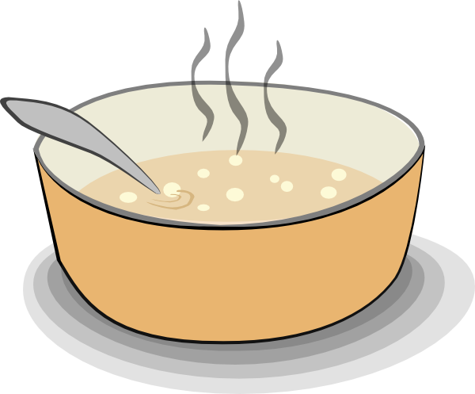
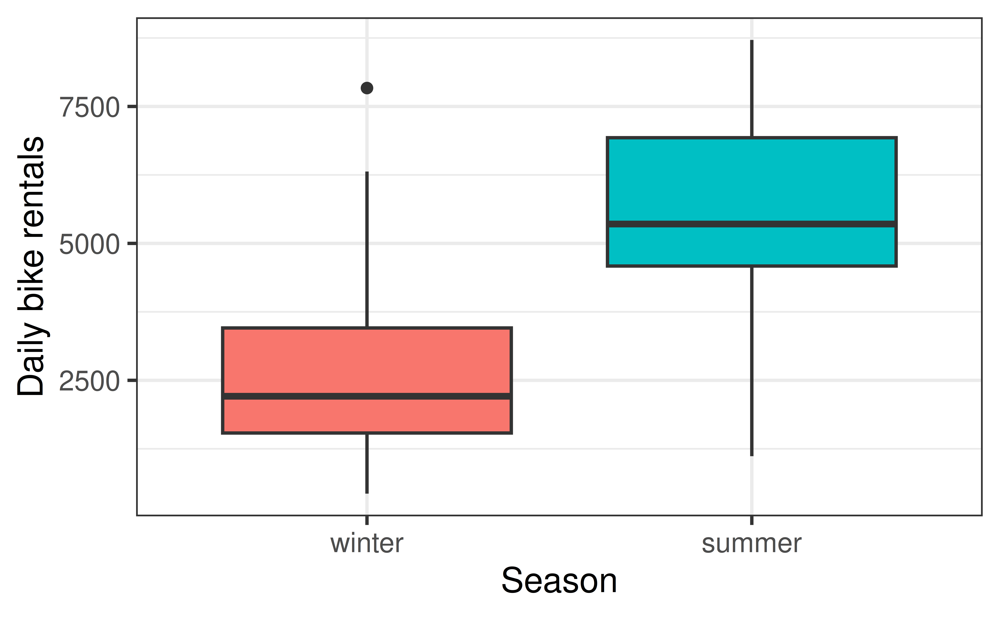
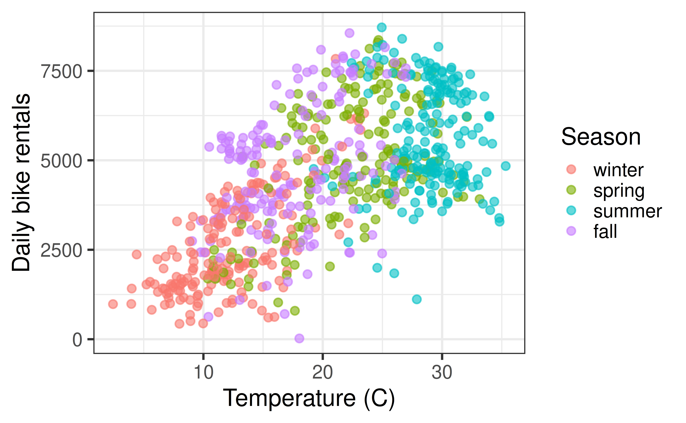
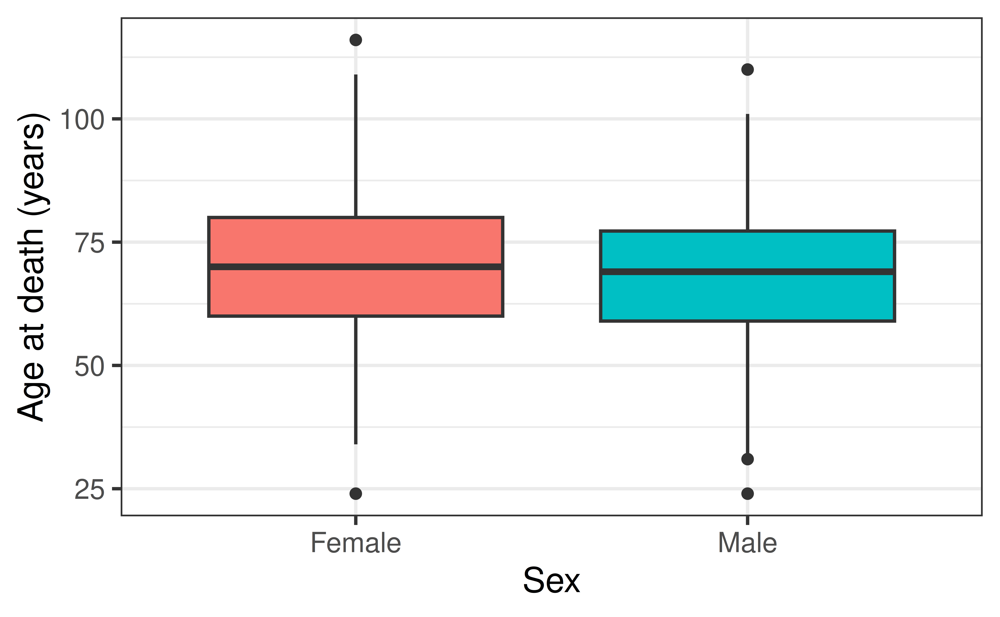

Introduction to Statistical Inference
Study design, sampling, and the Islands
Prof. Eric Friedlander
Topics
- Distinguish a population from a sample, and a parameter from a statistic.
- Distinguish observational studies from experiments, and connect study design to what we can conclude.
- Describe common sampling schemes and how a sample can go wrong.
- Use a regression model to answer a real question: What is the life expectancy on the Island?
Last time
- A residual is the gap between an observed value and the model’s prediction: \(e_i = y_i - \hat{y}_i\).
- Least squares picks \(\hat{\beta}_0, \hat{\beta}_1\) to minimize the sum of squared residuals.
- \(R^2\) and RMSE tell us how well a model fits the data we have.
Everything so far describes the data in front of us. What if we want to say something about data we haven’t seen?
From sample to population
The Coffee Truck, again
In AE 05 and AE 06 you fit models like
\[ \widehat{\text{Sales}} = \hat{\beta}_0 + \hat{\beta}_1 \times \text{Price} \]
- What does \(\hat{\beta}_1\) describe: the 60 shifts you simulated, or every shift Jo could ever run?
- Would a classmate who played the same game get exactly the same \(\hat{\beta}_1\)?
Population and sample
- Population: the complete set of observations we care about (size \(N\)): people, shifts, cities, islanders, etc.
- Sample: the subset we actually observe (size \(n\))
- A parameter is a number describing the population: \(\mu\), \(\beta_1\)
- A statistic is a number computed from the sample: \(\bar{x}\), \(\hat{\beta}_1\)
| Population | Sample | |
|---|---|---|
| Size | \(N\) | \(n\) |
| Mean | \(\mu\) | \(\bar{x}\) |
| Slope | \(\beta_1\) | \(\hat{\beta}_1\) |
We (almost) never get to see the parameter. We see a statistic and have to reason about the parameter.
Sampling is natural

- When you taste a spoonful of soup and decide it isn’t salty enough, that’s exploratory analysis.
- If you conclude that the entire pot needs salt, that’s an inference.
- For your inference to be valid, the spoonful (the sample) needs to be representative of the pot (the population).
Statistical inference
Statistical inference refers to ideas, methods, and tools for generalizing from the single sample we observed to statements about the population it came from.
Two things can go wrong:
- A bad sample. If the sample doesn’t represent the population, we are biased, and no amount of math can fix that. This is today.
- Sampling variability. Even a perfectly good sample gives a slightly different answer each time. We can quantify this. This is the next few weeks.
Where do data come from?
Two kinds of studies
Observational study
- Researchers observe and record what happens
- They do not decide who gets which value of the explanatory variable
Experiment
- Researchers assign values of the explanatory variable
- Ideally using random assignment
- The Coffee Truck: observational or experimental? Who chose
Price,Music, andLocation? - The DC Bikeshare data: observational or experimental?
Observational studies come in flavors
- Cross-sectional: a snapshot, everyone measured at (about) one point in time.
- Cohort: follow a group of people forward in time and see what happens to them.
- Case-control: start from the outcome (cases) and compare them to people without it (controls), looking backward.
You’ll need these words in the methods section of your Islands project.
Confounding

Summer has more rentals than winter. Is it the season that causes riders to show up, or something that comes with the season?
Confounding

- A confounding variable is related to both the explanatory and the response variable, so it can create (or hide) an apparent relationship.
- Temperature travels with season and drives ridership.
What can we conclude?
| Random assignment | No random assignment | |
|---|---|---|
| Random sample | Causal conclusions and generalizes to the population | Association only, but generalizes to the population |
| No random sample | Causal conclusions, but only for the people/units in the study | Association only, only for the people/units in the study |
Where do these studies go in the table?
- The Coffee Truck
- DC Bikeshare
- A survey of 300 randomly chosen islanders
Sampling: how did the data get into our hands?
- Simple random sample: every member of the population is equally likely to be chosen.
- Stratified sample: split the population into groups (strata) that are similar inside, then randomly sample from every stratum.
- Cluster sample: split the population into groups (clusters) that each look like a mini-population, randomly choose some clusters, and sample within those.
- Stratified cluster / multistage: combine the two.
- Convenience sample: whoever is easiest to reach. Watch out.
Strata vs. clusters
Stratified
- Groups are different from each other
- Sample from every group
- Goal: make sure every kind of unit is represented
Cluster
- Groups are similar to each other
- Sample from some groups
- Goal: save time and money
Which one would you use to survey College of Idaho students about their housing? By class year, or by residence hall? Which is which?
How a sample goes wrong
- Convenience bias: you sample the units that are easy to get.
- Undercoverage: part of the population isn’t in your sampling frame (the list you sample from) at all.
- Non-response: the people you chose don’t respond, and they differ from the ones who do.
- Survivorship / selection bias: the way units enter the data is related to the outcome.
Bias is a property of the sampling process, not the sample size. Would 1 million biased observations be better than 100 good ones?
Welcome to the Islands
The Islands
A simulated world of thousands of islanders, organized into villages across several islands.
- You can look up islanders, interview them, and measure things about them.
- You can assign islanders to treatments, which means you can run experiments as well as observational studies.
- Each islander can only do one task at a time, and the Islands have their own clock.
- It’s a simulation, so, in principle, we could census the whole population and check whether our inference was right.
🏝️ The Islands: sign in with your College of Idaho email
Finding your way around
- Visitor Center: information about the islands and islanders. Start with the Guides tab.
- Academy: example studies. Good for asking, “what questions can be asked here?”
- Videos: Island Overview, Working with the Islanders, Finding Groups on the Islands, Time on the Islands
- Trouble signing in? Use “Need to set or reset your password?” with your College of Idaho email.
The semester project
You will design, run, and analyze your own study on the Islands with a group.
| Deliverable | Due |
|---|---|
| 1. Pilot | Wed, Nov 4 |
| 2. Power | Wed, Nov 11 |
| 3. Preliminary analysis | Wed, Nov 18 |
| 4. Full draft | Mon, Nov 30 |
| 5. Final report + poster | Finals week (Dec 7-10) |
Today’s activity is a small preview of the whole workflow: sample a population, tidy the data, fit a model, and ask what it means.
What is the life expectancy on the Island?
A real question
What is the life expectancy on the Island? Is it different for men and women?
- Who is the population?
- Can we measure everyone?
- What would a good sample look like?
How a previous class answered it
Using a stratified cluster sample survey, we collected data from the Island’s records to calculate overall life expectancy on the Island, as well as male versus female life expectancies. We divided the island into geographic quadrants and each of us randomly collected data from birth records and individuals’ information pages, sampling 3-4 cities in our respective quadrants. Masha sampled data from Fairhaven, Serrano, Sunrise and Eden. Tyler collected data from Riverside, Valkov and Rosica. Abby sampled the populations living in Edwardton, Asderaki and Mossgiel. Jess collected data in Macondo, Durand Bay and Deep Bay. The information we collected included each individual’s birth year, death year and sex.
How a previous class answered it (continued)
Once we compiled the data for approximately 500 people, we selected the people who died between 1980 and 2010 as well as those who are alive today. We made the assumption that this selection would give us a representative picture of present or contemporary life expectancy, since living conditions throughout the last thirty years could be considered relatively consistent and relevant. We also capped the age at 150, since our oldest person in the sample was 147. Once we applied these exclusions, our data for the actual calculations included approximately 300 people - still a significant number for this type of simulation.
(They then built age-specific mortality rates from a life table. We’ll come back to that.)
Read it like a statistician
- What is the population? What is the sampling frame?
- Which part is stratified? Which part is clustered?
- Why did they keep only people who died between 1980 and 2010 (or are still alive)? What does that assumption buy them?
- Why cap age at 150?
- ~500 people sampled, ~300 analyzed. Who did we lose, and does it matter?
Life expectancy is trickier than it sounds
Life expectancy is the average number of years a newborn today could expect to live, if current death rates stayed the same.
The previous class computed it properly with age-specific mortality rates (a life table), which is what demographers do. It’s a lot of tabulating.
Today, we’ll use a simpler stand-in: the mean age at death among islanders who have died.
- What’s the danger in averaging age at death among only the people who have died recently?
- Who is missing from that group?
Someone born last year can’t appear in it. Neither can anyone who hasn’t died yet. Keep this in mind, since we’ll come back to it.
Today’s plan
You will mimic the stratified cluster design:
- Each group gets a set of villages (a cluster).
- Within those villages, sample islanders who have died, and record
sex,birth_year, anddeath_yearin one shared Google Sheet. - Compute
age_at_death = death_year - birth_year. - Pool everyone’s data, estimate life expectancy, and fit a model predicting age at death from sex.
Village assignments
| Group | Villages |
|---|---|
| A | Fairhaven, Serrano, Sunrise, Eden |
| B | Riverside, Valkov, Rosica |
| C | Edwardton, Asderaki, Mossgiel |
| D | Macondo, Durand Bay, Deep Bay |
- Record
sexas exactlyFemaleorMale. - Include only islanders who died in 1980 or later, and drop anything with an age over 150.
- Enter one row per islander. One task at a time per islander!
Activity
Complete Exercises 1-3 (get oriented, collect, and load your pooled data).
Modeling life expectancy from sex
Our pooled data
Note
The output on these slides is from a made-up island so the slides render before you’ve collected anything. Yours will look different.
What are the observational units? What are the variables, and which is the response?
Exploring age at death

Fitting the model
# A tibble: 2 × 5
term estimate std.error statistic p.value
<chr> <dbl> <dbl> <dbl> <dbl>
1 (Intercept) 70.4 1.44 48.8 3.55e-129
2 sexMale -2.65 2.05 -1.29 1.97e- 1\[ \widehat{\text{age at death}} = 70.4 - 2.65 \times \text{sexMale} \]
- What is the reference level? How can you tell?
- What does the intercept mean? What does the slope mean?
Interpreting the model
- Intercept: the mean age at death for the reference group (
Female): 70.4 years. - Slope: the difference in means. Men in our sample die 2.65 years earlier, on average, than women.
Work time
Complete Exercises 4-7 (explore, fit, interpret, and critique).
Is the difference between men and women real?
The question
Our model says men and women differ by about 2.65 years in our sample.
Is the difference between men and women real?
What could “real” mean here?
Same population, different samples
In our made-up world we know the population, so let’s take four more samples of the same size.
| sample | estimate |
|---|---|
| 1 | -1.68 |
| 2 | -4.28 |
| 3 | -4.20 |
| 4 | -2.14 |
Same island, same model, same sample size. Four different slopes. Which one is “right”?
Two competing explanations
If a sample slope \(\hat{\beta}_1\) is not zero, there are (at least) two reasons why:
- There is a real difference in the population: \(\beta_1 \neq 0\).
- There is no real difference, and we just got a lucky (or unlucky) draw: \(\beta_1 = 0\) but \(\hat{\beta}_1 \neq 0\).
Sampling variability means a sample statistic won’t equal the population parameter, so the data alone can’t tell us which explanation is right. We need a way to measure how much a slope is expected to bounce around.
Look at the four slopes on the previous slide. How big would the slope have to be before you’d be convinced?
Back to the AE
Complete Exercises 8-9: refit the model using only your own group’s villages, compare slopes on the board, and decide how confident you are.
Recap
- Population vs. sample, parameter vs. statistic: inference means using \(\hat{\beta}_1\) to learn about \(\beta_1\).
- Observational studies observe; experiments assign. Only random assignment supports causal claims, and only random sampling supports generalizing.
- Confounders are related to both the explanatory and response variables.
- Stratified samples take units from every group; cluster samples take all or some units from some groups. Bias comes from the sampling process, not the sample size.
- A regression with a categorical predictor estimates a difference in means, but a different sample gives a different \(\hat{\beta}_1\).
- Next time: how do we measure how much a slope should bounce around by chance?